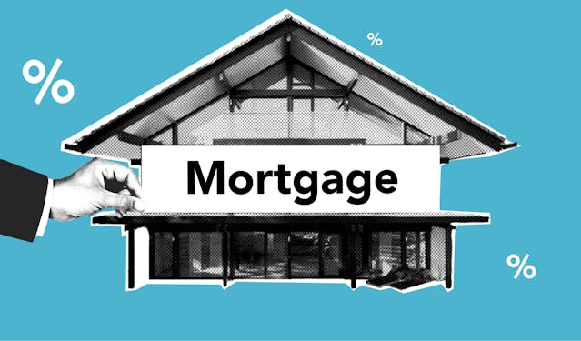

Skilled in Power BI, I transformed raw survey data into impactful market research insights for CodeX, a German beverage company entering the Indian market. Leveraging Power BI’s advanced analytics and visualization capabilities, I created interactive dashboards that revealed critical consumer trends, such as preferences for health-conscious ingredients, the significance of brand reputation, and the demand for innovative packaging. These insights drove strategic recommendations for product development and marketing, demonstrating my ability to turn complex data into actionable business strategies. My expertise in Power BI not only streamlined data analysis but also empowered CodeX to make informed decisions in a competitive market. Explore The entire Project Below


In the Card Utilization project, my mastery of Excel was pivotal in crafting a compelling analysis of customer spending habits. By harnessing advanced functions like INDEX MATCH for seamless data integration, and pivot tables for dynamic insights, I delivered a dashboard that transformed complex data into actionable business strategies. This project highlights my ability to leverage Excel’s full potential to drive impactful decision-making and optimize financial outcomes.View the Full Project

In the sales promotions project, I leveraged the full power of Power BI to transform complex data into compelling visual stories. By crafting dynamic dashboards, I made intricate trends and patterns crystal clear, empowering stakeholders to make data-driven decisions with confidence. This project exemplifies how my advanced visualization skills can turn challenging data sets into actionable insights that drive impactful business outcomes.View the Full Project

In the housing project, I executed meticulous data cleaning using SQL to ensure the highest data quality and accuracy. By crafting complex queries to identify and rectify inconsistencies, I streamlined data integrity and facilitated insightful analysis. This rigorous approach underscores my commitment to precision and reliability in handling real estate data. View the Full Project

In the COVID project, I utilized SQL for comprehensive data exploration, uncovering critical insights through advanced queries and aggregations. My approach involved dissecting complex datasets to identify trends and correlations, which revealed pivotal patterns and supported informed decision-making.I was able to transform raw data to meaningful insightsView the Full Project.